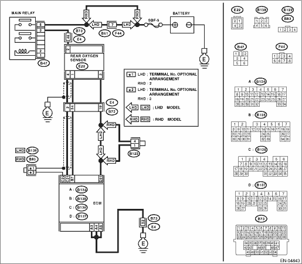

DTC DETECTING CONDITION:
Detected when two consecutive driving cycles with fault occur.
CAUTION:
After repairing or replacing the defective part, perform the Clear Memory Mode  and Inspection Mode .
and Inspection Mode .
WIRING DIAGRAM:


| STEP | CHECK | YES | NO |
|
Is any other DTC displayed? |
Check DTC using “List of Diagnostic Trouble Code (DTC)”. NOTE: In this case, it is not necessary to inspect DTC P0139. |
|
|
|
Is the resistance less than 1 Ω? |
|
Repair the open circuit of harness between ECM and rear oxygen sensor connector. |
|
|
Is the resistance 1 MΩ or more? |
|
Repair the ground short circuit of harness. |
|
|
Is the resistance less than 1 Ω? |
Replace the rear oxygen sensor. |
Temporary poor contact occurs. Check the poor contact of connector. |